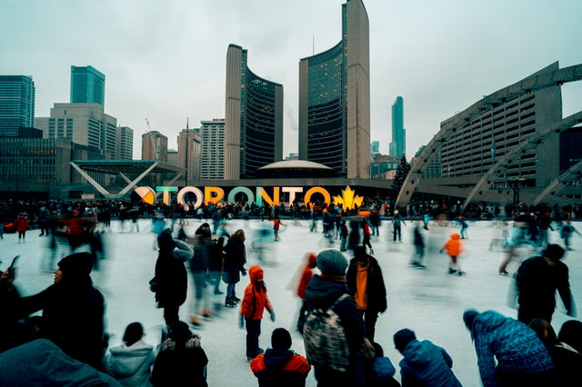

Where is Toronto?
Toronto, the capital of the province of Ontario, is located on the northwestern short of Lake Ontario. Although it is a Canadian city, it is located further south than many points in the United States, including much of New England and the northern Midwest, and is highly accessible by both Canadians and Americans.

People of Toronto
Toronto is known for being one of the most multicultural cities in the world. According to the 2016 census, immigrants make up 47 per cent of the city’s population, while racialized Canadians make-up a larger percentage, at 51.5 per cent. Of the racialized group, South Asian, Chinese, Black and Filipino people constitute the largest communities. Historically, Toronto had a markedly British population compared to early Upper Canada’s more American rural society. British immigration after the 1820s increased this predominance, also bringing a large number of Protestant Ulster Irish. Late in the 1840s, the exodus from famine-stricken Ireland added a sizable Catholic Irish minority as well, leading to religious discord in the city. The Ulstermen's Orange Order became a guardian of British Protestant influence and wielded power in civic politics. Having recently expanded to include the municipalities of North York, Scarborough, Etobicoke, York, and East York, Metropolitan Toronto now has a population of some 4.2 million people, while the central city has over half a million. Toronto's population includes more than 80 different ethnic groups; about 100 different languages are spoken in the city. In the course of its history, Toronto has absorbed 350,000 Chinese immigrants, 400,000 Italians, 127,000 Greeks, and significant numbers of West Indians, Latin Americans, Indians, Sri Lankans, and Koreans. Nearly two-thirds of those who reside in Greater Toronto were born and raised elsewhere. The metropolitan area population includes the most extensive Portuguese population in North America, the largest Chinese population in eastern Canada, a half million Italians, and many other groups.
Cultural Life
Toronto is the main urban cultural centre in English Canada. It is the home of the large University of Toronto (1827), Ryerson University (1948), the more recent York University (1959), the Art Gallery of Ontario, the Ontario College of Art And Design, the world-renowned Royal Ontario Museum, the innovative Ontario Science Centre, the Toronto Symphony Orchestra and the National Ballet of Canada. Other nationally eminent artistic, musical and library institutions are found here along with top Canadian centres of medical and scientific research, and the world-class Toronto Zoo. Toronto is English Canada's leading theatre town and its rich multicultural variety is reflected in the performing arts.In addition to being the centre of the Canadian television and film industries, Toronto has also produced a number of outstanding film directors (David Cronenberg, Norman Jewison, Atom Egoyan) and actors (from silent film star Mary Pickford to Christopher Plummer, John Candy, and Jim Carrey), many of whom found their greatest success working in Hollywood. In the 1960s, Yorkville was the site of coffeehouses and clubs that were venues for the era’s most important performers, including Canadian singer-songwriters Neil Young, Joni Mitchell, and Gordon Lightfoot. Later the city would be the home base for popular music artists as diverse as Rush, Cowboy Junkies, Barenaked Ladies, Broken Social Scene, Drake, and Feist.
History
The first known European to set foot in the area of present-day Toronto was a Frenchman, Étienne Brulé (c. 1592–1633), in 1615. The plain between the Don and Humber rivers had been traversed for hundreds of years by hunters and warriors of native groups including the Hurons, Iroquois, Ottawas, and Mississaugas. The French established a trading post at the site in 1720 and a settlement, Fort Rouille, in 1751. Twelve years later, French rule of Canada was ended by the Treaty of Paris, and the entire territory came under British control. In 1793 the British built the settlement that was to become Toronto. Called York, it became the capital of the British province of Upper Canada. Present-day Toronto's main street, Yonge Street, was laid out in 1796. In the latter part of the nineteenth century, Toronto's population grew rapidly, reaching 181,000 by 1891. The city became a major business center, with large fortunes amassed by a number of self-made entrepreneurs, including Timothy Eaton (1834–1907) and Robert Simpson, who laid the groundwork for retail empires that were to flourish in the twentieth century as well. With new wealth came the establishment of cultural institutions such as the Toronto Philharmonic Society and others. As the new century opened, the city flourished economically, attracting a new wave of immigrants from Russia, Italy, and Eastern Europe and also experiencing some of the social problems that came with increased industrialization.
Urban renewal was sparked in the 1960s as area residents began moving from the suburbs back to the city, and the Yorkville area temporarily became a counterculture mecca. By the 1970s Toronto surpassed Montreal as Canada's top financial center. It boasted the largest number of corporate headquarters in the country, as well as its major stock exchange and the capital of its publishing industry. A growing number of skyscrapers changed city's skyline, and waterfront commercial development was begun with the development of Harbourfront. Some of the city's top attractions, including the zoo, the Ontario Science Centre, and Ontario Place, were also built during this period.Since then Toronto has continued to grow into a major business and cultural center, becoming home to one of North America's leading theater districts as well as the world's first sports stadium with a fully retractable roof, the Skydome, completed in 1989. The 1990s have seen the expansion of the Metro Toronto Convention Center, the construction of a new National Trade Center and sports arena, and a major renovation of the Royal Ontario Museum. In 1998 a major government reorganization took place, uniting six municipalities into an expanded City of Toronto.
Interesting Facts
• You can hear over 180 different languages and dialects in Toronto, as more than a third of the people who live there speak a language other than English and French. You can see the multicultural nature of the city in areas like Little Italy, Little Portugal, and Chinatown, which often have dual language street signs.
• Toronto is the fifth largest city in North America - it's only beaten by Mexico City, New York City, Los Angeles, and Chicago.
• Every year, Toronto holds the Peeks Toronto Caribbean Carnival - usually known as Caribana. It's the biggest street festival in North America and gets over a million visitors every year!
• Toronto has an underground walkway called PATH, which is now the largest underground shopping complex. It also holds the world's largest underground sidewalk sale every year - so it's the perfect place to go to find something unique.
• In 1975, one of Toronto's most famous landmarks was built: the CN Tower. Until 2007, it was the tallest freestanding structure in the world at 1815 feet.
• The Rogers centre (previously known as the SkyDome) was the first stadium in the world with a retractable roof. You can find it in downtown Toronto and watch all kinds of sports matches there.
• You can find Casa Loma in midtown Toronto: a gothic revival house which is now a museum. Lots of films have used this iconic building as a set, including Harry Potter and the Deathly Hallows, X-Men, and Beauty and the Beast.
• In Lake Ontario, you can find the Toronto Islands: a group of fifteen islands connected by bridges. It's the biggest car-free urban community in North America, and has a lot of things to do - including kayaking, boating, and a theatre.
• About a quarter of Hollywood films are filmed in Toronto, making the city one of the most popular places for movie production.
• You can enjoy 52 outdoor skating rinks in Toronto – one for every week of the year!
